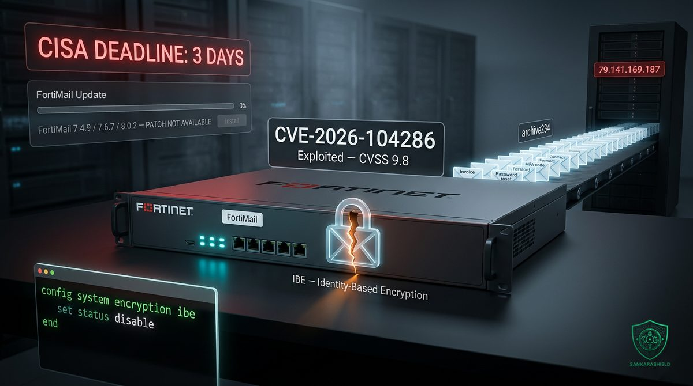

CISA gave three days to fix FortiMail. Fortinet has not shipped the fix.

On 1 October Fortinet published advisory FG-IR-26-175 for CVE-2026-104286, a critical flaw in FortiMail, its secure email gateway. It scores CVSS 9.8, needs no credentials and no user interaction, and it is already being exploited. The same day, CISA added it to the Known Exploited Vulnerabilities catalog and gave US federal civilian agencies until 4 October to deal with it.
Three days is the window CISA reserves for bugs that are already hurting real organisations. What makes this one unusual is the other half of the story: the fixed releases for the supported branches, FortiMail 7.4.9, 7.6.7 and 8.0.2, were listed as upcoming on the day of disclosure. At the time of writing, they still are.
If you run FortiMail and your plan is "we will patch when the firmware comes out", this article is about you.
WHAT ACTUALLY HAPPENED
The vulnerable component is FortiMail's Identity-Based Encryption service, IBE. It is the feature that lets an organisation send encrypted email to external recipients who have no encryption setup of their own: the recipient gets a link, opens a web page served by the FortiMail appliance and reads the protected message there. To make that work, the appliance exposes a web endpoint under /ibe.
That endpoint is where the bug lives. It combines two classic weaknesses. Path traversal, CWE-22, where a crafted path escapes the directory the application meant to write to. And improper neutralisation of NULL bytes, CWE-158, where a hidden terminator character truncates a filename after it has already been checked. Together, they let an unauthenticated attacker send one crafted HTTP or HTTPS request and write an arbitrary file anywhere on the appliance's file system.
Affected versions: FortiMail 8.0.0 to 8.0.1, 7.6.0 to 7.6.6, 7.4.0 to 7.4.8, and the whole 7.2 branch from 7.2.0 to 7.2.9. Fortinet names 8.0.2, 7.6.7 and 7.4.9 as the fixed releases. The 7.2 branch gets no in-branch fix; the advice is to move to 7.4 or later.
Note the trap in that last line. Migrating from 7.2 to 7.4 is the only "fix" available today, but every 7.4 release up to 7.4.8 is itself vulnerable. Migration removes an ageing branch from your estate. It does not close this hole until 7.4.9 ships.
Fortinet has not named the attacker and has not said how many organisations are affected.
WHY A FILE WRITE IS A TAKEOVER
"Arbitrary file write" sounds less alarming than "remote code execution". On an appliance, it rarely is. If you can write a file anywhere, you can write a configuration file a service will load, a script a scheduled job will run, or a library the system will inject into every process it starts.
The indicators Fortinet published show attackers doing exactly that. On compromised gateways, responders found these files added: /data/etc/ld.so.preload, /data/lib/liblog.so, /data/bin/webconsole and /data/bin/mailservice. And these files modified: /bin/smit, /data/etc/httpd.conf and /data/migadmin.tar.gz.
The ld.so.preload entry deserves a specific word. On Linux-based systems, that file tells the dynamic loader to inject a library into every program it launches. It is one of the most reliable ways to persist across reboots and hide inside legitimate services. It also survives a firmware upgrade if nobody removes it. Installing 7.4.9 on a backdoored gateway will not evict the attacker.
Reported log anomalies include root cron entries referencing /migadmin, administrator logouts with an empty interface value, IBE decryption errors containing invalid Base64 data, and spikes in failed internal-user logins. None of them proves compromise on its own. Together, on an internet-facing gateway with IBE enabled, they are a reason to open an incident.
THE QUIETEST BACKDOOR IS A FEATURE
One indicator stands out from all the others. On compromised gateways, responders found an email archive account named "archive234", configured to send archived mail to an external server at 79.141.169[.]187. The second attacker address in the advisory is 45.129.0[.]192.
No ransomware. No wiper. Nothing that crashes or raises an alert. Just the appliance's own archiving function doing what archiving functions do, for someone else.
Think about what crosses an email gateway in a single week: contracts, invoices and bank details, password reset links, one-time codes, legal correspondence, board papers, HR files. An attacker who controls the archive does not need to stay on your network at all. Your gateway keeps posting copies to them until somebody reads the archive configuration line by line.
There is also an uncomfortable irony here. The vulnerable component is the encryption feature, the one an organisation switches on precisely because it takes confidentiality seriously. The control meant to protect sensitive mail became the door to all of it.
"PATCH IN THREE DAYS" WITH NOTHING TO INSTALL
KEV deadlines are usually read as patch deadlines, and most vulnerability management processes are built around that reading: open a ticket, book a change window, install the firmware, close. CVE-2026-104286 breaks that loop.
What CISA actually requires is to apply the vendor's mitigations, or stop using the product, by the deadline. For most organisations that comes down to three concrete actions this week: switch off IBE, take the management interface off the internet, and hunt for compromise.
Teams that file this under "waiting on vendor" are not compliant. They are exposed. Coverage of the advisory expects the fixed releases within two to three weeks, and every one of those days is a day an unmitigated gateway sits open to an exploit that is already in use.
THE SEPTEMBER PATTERN
FortiMail is the latest in a long run of security and edge appliances exploited in 2026. In September alone, CISA added exploited flaws in network and security products from Cisco, Citrix, F5, Check Point and MikroTik to the KEV catalog. Cisco's ISE bug scored a perfect 10.0. Citrix's NetScaler pair was exploited before any fix existed.
The reasons attackers keep coming back to this class of device have not changed.
They sit on the internet by design. An email gateway has to accept connections from anyone who might send you mail, and IBE has to serve web pages to anyone you send encrypted mail to.
They rarely run endpoint detection. Most organisations cannot install their EDR agent on a vendor appliance, so implants live exactly where security teams have the least visibility.
They are trusted by everything around them. Mail that passed the gateway is mail your users believe.
And they are almost never rebuilt. Appliances get upgraded in place for years, which is precisely what persistence mechanisms like ld.so.preload are built to survive.
WHAT TO DO NOW
FIND EVERY FORTIMAIL YOU OWN — production, disaster recovery, the one a subsidiary bought, the virtual appliance in a cloud account; record version, branch, whether IBE is enabled and which interfaces expose HTTPS.
DISABLE IBE UNLESS YOU TRULY NEED IT THIS WEEK — it is the documented mitigation and it removes the vulnerable endpoint (config system encryption ibe, set status disable, end; confirm the syntax against your firmware's documentation first); if the business depends on encrypted external delivery, weigh a few days of degraded workflow against weeks of exposure, and tell the business before you switch it off.
TAKE THE MANAGEMENT INTERFACE OFF THE INTERNET — no HTTPS administrative access on WAN-facing interfaces, admin access only from a dedicated management network or jump host, and the same rule for every other appliance you own.
HUNT BEFORE YOU ASSUME YOU ARE CLEAN — check for the files listed above, review root cron entries, look for the log anomalies, and search firewall and proxy logs for traffic to both attacker addresses since at least mid-September; if you find indicators, isolate the appliance and rebuild from known-good firmware rather than upgrading in place.
AUDIT ARCHIVING AND FORWARDING, LINE BY LINE — list every archive account, export destination, journaling rule and forwarding policy on the gateway; anything nobody can explain is an exfiltration channel until proven otherwise, and if you find one, your incident is about every message that passed through it.
TREAT THE FIXED RELEASE AS AN EMERGENCY CHANGE — subscribe to FG-IR-26-175, pre-approve the change now, install 7.4.9, 7.6.7 or 8.0.2 the day it ships, then run the hunt again, because patching closes the hole but does not remove what was planted through it.
WHAT TO READ WITH CARE
The file paths, IP addresses, the "archive234" account and the log anomalies come from Fortinet's indicators as published and as reported in coverage of advisory FG-IR-26-175. Check the advisory itself for the authoritative list, and remember that attacker infrastructure changes: a clean IP match does not mean a clean appliance. The two-to-three-week expectation for the fixed releases comes from coverage, not from a Fortinet commitment.
THE UNCOMFORTABLE PART
The problem here is not one vendor. It is how our industry treats appliances. We buy a box to protect something, put it on the internet because that is its job, and then manage it like furniture: upgraded in place for years, rarely audited, never rebuilt.
A zero-day without a patch is not a reason to wait. It is a reason to hunt. The firmware will come. The question that matters is what left your network before it did.
So ask it now, before an incident report asks it for you: do you know every place your company's email is being copied to?